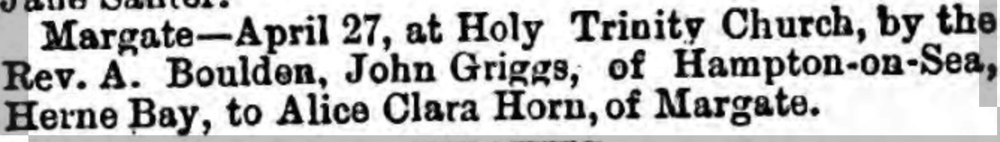
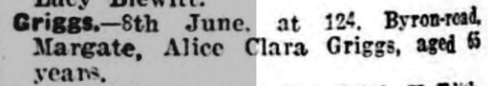

Alice Clara Griggs (née Horn) cFeb 1869 - 1934
[ Home ] | [ Calendar ] | [ Surnames Index ] | [ Census Index ] | [ Family History ]The child of John Horn (an agricultural laborer) and Charlotte Spratt (a laundress), Alice Horn, the first cousin three-times-removed on the father's side of Nigel Horne, was born in Northdown, Margate, Kent, England c. Feb 18691, was baptized in Margate, Kent, England on Apr 18, 1869 and also married John Griggs (a general laborer with whom she had 8 children: William James, Florence May, Alice Maud Mary, Charles Walter, Winifred Doris, Helen Maud, Mary Ann and Mildred Sylvia) there at Holy Trinity Church on Apr 27, 1890.
During her life, she was living at her birthplace on Apr 2, 18717; at Victoria Road in Margate on Apr 3, 18818; at Church Street in Margate on Apr 5, 18916; at 103 Milton Road in Margate on Mar 31, 19014, on Apr 2, 19115 and in 19153; and at 124 Byron Avenue in Margate in 1934.
She died on Jun 8, 1934 in Thanet, Kent, England2.
Parents
- John was born c. 1822
- Charlotte Anne was born c. 1840
Children
- William James was born on May 8, 1891
- Florence May was born on Aug 7, 1893
- Alice Maud Mary was born in 1895
- Charles Walter was born in 1898
- Winifred Doris was born on Oct 31, 1899
- Helen Maud was born on Apr 7, 1902
- Mary Ann was born on Aug 9, 1903
- Mildred Sylvia was born on Jun 26, 1907
Citations
- England & Wales births 1837-2006 - Findmypast
- England & Wales deaths 1837-2007 - Findmypast
- British Army WWI Service Records, 1914-1920 Online publication - Provo, UT, USA: Ancestry.com Operations Inc, 2008.Original data - War Office: Soldiers' Documents, First World War 'Burnt Documents' (Microfilm Copies); (The National Archives Microfilm Publication WO363); Records created or inherited
- 1901 England, Wales & Scotland Census - Findmypast (was age 34 and the wife of the head of the household)
- 1911 Census for England & Wales - Findmypast (was age 42 and the wife of the head of the household)
- 1891 England, Wales & Scotland Census - Findmypast (was age 21 and the sister of the head of the household)
- 1871 England, Wales & Scotland Census - Findmypast (was age 2 and the daughter of the head of the household)
- 1881 England, Wales & Scotland Census - Findmypast (was age 12 and the daughter of the head of the household)
Media
Thanet Advertiser - 3 May 1890

Thanet Advertiser 19 June 1934

Thanet Advertiser 19 June 1934
England & Wales births 1837-2006 - BMD/B/1869/1/AZ/000329/211
England & Wales deaths 1837-2007 - BMD/D/1934/2/AZ/000364/012
1911 Census for England & Wales - GBC/1911/RG14/04491/0387/2
1901 England, Wales & Scotland Census Transcription - GBC-1901-0007426804
1891 England, Wales & Scotland Census Transcription - GBC-1891-0005862203
England & Wales marriages 1837-2005 Transcription - BMD-M-1890-2-AZ-000158-135
England Births & Baptisms 1538-1975 - R_884650880
Kent Baptisms - GBPRS/CANT/B/96274273
Kent Baptisms - GBPRS/CANT/B/96223245
Family Tree

Generated by ged2site. Last updated on Jun 11, 2024